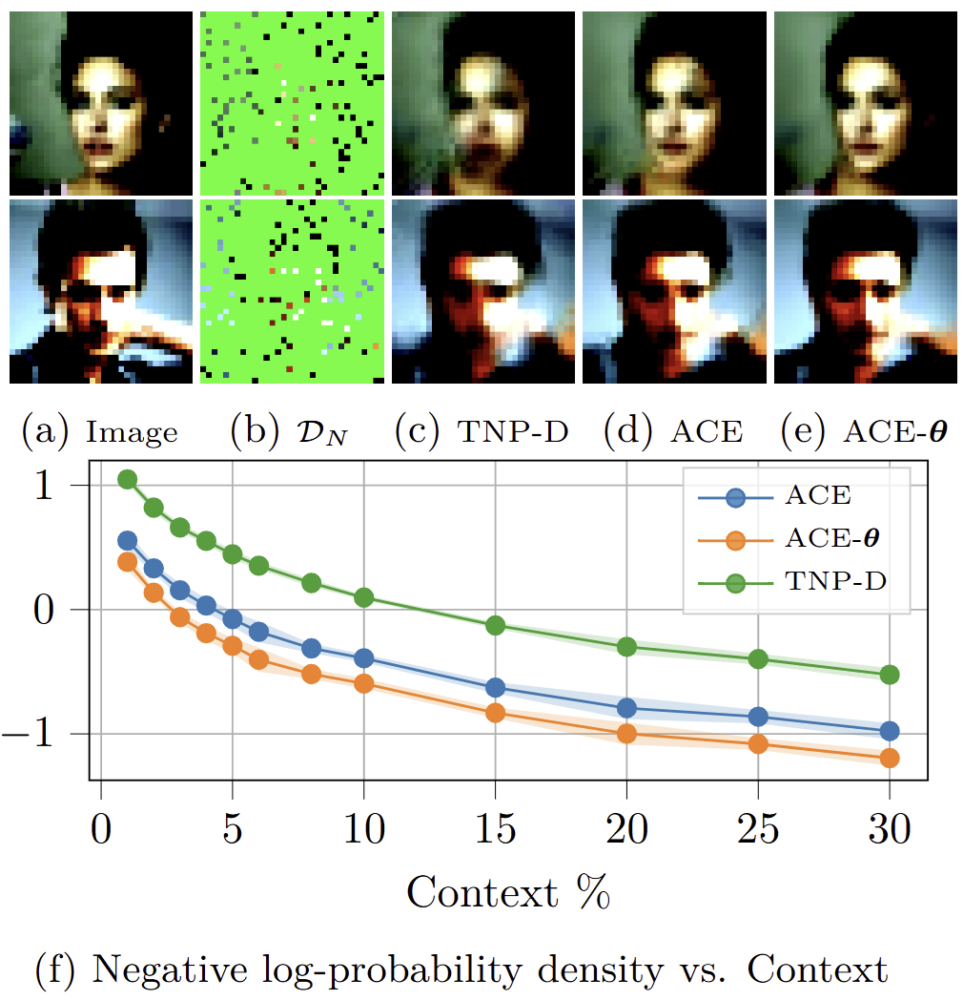

Amortized Probabilistic Conditioning for Optimization, Simulation and
Inference
Paul E. Chang*1, Nasrulloh Loka*1, Daolang
Huang*2, Ulpu Remes3, Samuel Kaski2,4,
Luigi Acerbi1
1Department of Computer Science, University of Helsinki,
Helsinki, Finland 2Department of Computer Science, Aalto University, Espoo,
Finland 3Department of Mathematics and Statistics, University of
Helsinki, Helsinki, Finland 4Department of Computer Science, University of Manchester,
Manchester, United Kingdom *Equal contribution
Accepted to the 28th International Conference on Artificial Intelligence
and Statistics (AISTATS 2025)
We introduce the Amortized Conditioning Engine (ACE), a
transformer-based meta-learning model that enables flexible
probabilistic conditioning and prediction for machine learning tasks.
ACE can condition on both observed data and latent variables, include
priors at runtime, and output predictive distributions for both data and
latents. This general framework unifies and simplifies diverse ML tasks
like image completion, Bayesian optimization, and simulation-based
inference.
@article{chang2025amortized,
title={Amortized Probabilistic Conditioning for Optimization, Simulation and Inference},
author={Chang, Paul E and Loka, Nasrulloh and Huang, Daolang and Remes, Ulpu and Kaski, Samuel and Acerbi, Luigi},
journal={28th Int. Conf. on Artificial Intelligence & Statistics (AISTATS 2025)},
year={2025}
}
Introduction
Amortization, or pre-training, is a crucial technique for improving
computational efficiency and generalization across many machine learning
tasks. This paper capitalizes on the observation that many machine
learning problems reduce to predicting data and task-relevant latent
variables after conditioning on other data and latents. Moreover, in many
scenarios, the user has exact or probabilistic information (priors) about
task-relevant variables that they would like to leverage, but
incorporating such prior knowledge is challenging and often requires
dedicated, expensive solutions.
Consider Bayesian optimization (BO), where the goal is to find the
location $\mathbf{x}_{\text{opt}}$ and value $y_{\text{opt}}$ of the
global minimum of a function. These are latent variables, distinct from
the observed data $\mathcal{D}_{N}$ consisting of function values at
queried locations. Following information-theoretical principles, we should
query points that would reduce uncertainty about the latent optimum, but
predictive distributions over these latents are intractable, leading to
complex approximation techniques.
Probabilistic conditioning and prediction. Many tasks
reduce to probabilistic conditioning on data and key latent variables
(left) and then predicting data and latents (right). (a) Image completion
and classification. (b) Bayesian optimization. (c) Simulator-based
inference.
We address these challenges by introducing the
Amortized Conditioning Engine (ACE), a general
amortization framework that extends transformer-based meta-learning
architectures with explicit and flexible probabilistic modeling of
task-relevant latent variables. Through the lens of amortized
probabilistic conditioning and prediction, we provide a unifying
methodological bridge across multiple fields.
Probabilistic Conditioning and Prediction
In the framework of prediction maps and Conditional Neural Processes
(CNPs), a prediction map $\pi$ is a function that takes a context set of
input/output pairs $\mathcal{D}_{N}$ and target inputs
$\mathbf{x}_{1:M}^*$ to predict a distribution over the corresponding
target outputs:
While diagonal maps directly model conditional 1D marginals, they can
represent any conditional joint distribution autoregressively.
The Amortized Conditioning Engine (ACE)
Key Innovation: Encoding Latents and Priors
ACE extends the prediction map formalism to explicitly accommodate latent
variables. We redefine inputs as $\boldsymbol{\xi} \in \mathcal{X} \cup
\{\ell_1, \ldots, \ell_L\}$ where $\mathcal{X}$ is the data input space
and $\ell_l$ is a marker for the $l$-th latent. Values are redefined as $z
\in \mathcal{Z}$ where $\mathcal{Z}$ can be continuous or discrete. This
allows ACE to predict any combination of target variables conditioning on
any other combination of context data and latents:
Key Innovation: ACE also allows the user to express
probabilistic information over latent variables as prior probability
distributions at runtime. To flexibly approximate a broad class of
distributions, we convert each one-dimensional probability density
function to a normalized histogram of probabilities over a predefined
grid.
Prior amortization. Two example posterior distributions
for the mean $\mu$ and standard deviation $\sigma$ of a 1D Gaussian. (a)
Prior distribution over $\boldsymbol{\theta}=(\mu, \sigma)$ set at
runtime. (b) Likelihood for the observed data. (c) Ground-truth Bayesian
posterior. (d) ACE's predicted posterior approximates well the true
posterior.
Architecture
ACE consists of three main components:
Embedding Layer: Maps context and target data points
and latents to the same embedding space. For context data points
$(\mathbf{x}_n, y_n)$, we use $f_{\mathbf{x}}(\mathbf{x}_n) +
f_{\text{val}}(y_n) + \mathbf{e}_{\text{data}}$, while latent variables
$\theta_l$ are embedded as $f_{\text{val}}(\theta_l) + \mathbf{e}_l$.
For latents with a prior $\mathbf{p}_l$, we use
$f_{\text{prob}}(\mathbf{p}_l) + \mathbf{e}_l$.
Transformer Layers: ACE employs multi-head
self-attention for context points and cross-attention from target points
to context, implemented efficiently to reduce computational complexity.
Output Heads: For continuous-valued variables, ACE uses
a Gaussian mixture output consisting of $K$ components. For
discrete-valued variables, it employs a categorical distribution.
A conceptual figure of ACE architecture.
ACE's architecture can be summarized in the embedding layer,
attention layers and output head. The $(\mathbf{x}_n, y_n)$ pairs
denote known data (context). The red $\mathbf{x}_{j}$ denotes
locations where the output is unknown (target inputs). The main
innovation in ACE is that the embedder layer can incorporate known
or unknown latents $\theta_{l}$ and possibly priors over these.
The $z$ is the embedded data, while MHSA stands for multi head
cross attention and CA for cross-attention. The output head is a
Gaussian mixture model (GMM, for continuous variables) or
categorical (Cat, for discrete variables). Both latent and data
can be of either type.
The diagram illustrates ACE's key architectural enhancements,
including:
The ability to incorporate latent variables ($\theta$) and their
priors in the embedder layer
More expressive output heads using Gaussian mixture models (GMM)
or categorical distributions
Flexible representation of both continuous and discrete data and
latent variables
These modifications allow ACE to amortize distributions over both
data and latent variables while maintaining permutation invariance
for the context set.
Training and Prediction
ACE is trained via maximum-likelihood on synthetic data. During
training, we generate each problem instance hierarchically by first
sampling the latent variables $\boldsymbol{\theta}$, and then data
points $(\mathbf{X}, \mathbf{y})$ according to the generative model of
the task. Data and latents are randomly split between context and
target.
ACE minimizes the expected negative log-likelihood of the target set
conditioned on the context:
We demonstrate ACE's capabilities across diverse machine learning tasks:
1. Image Completion and Classification
ACE treats image completion as a regression task, where given limited
pixel values (context), it predicts the complete image. For MNIST and
CelebA datasets, ACE outperforms other Transformer Neural Processes, with
notable improvement when integrating latent information.

Image completion. (a) Reference image. (b) Observed
pixels (10%). (c-e) Predictions from different models. (f) Performance
across varying levels of context.
ACE also performs well at conditional image generation and image
classification, as we can condition and predict latent variables such as
CelebA features.
Conditional image completion. Example of ACE conditioning
on the value of the BALD feature when the top part of the image is masked.
2. Bayesian Optimization (BO)
In Bayesian optimization, ACE explicitly models the global optimum
location $\mathbf{x}_{\text{opt}}$ and value $y_{\text{opt}}$ as latent
variables. This enables:
Direct sampling from the predictive distribution
$p(\mathbf{x}_{\text{opt}} | \mathcal{D}_N, y_{\text{opt}} < \tau)$ for
Thompson Sampling (ACE-TS)
Straightforward implementation of Max-Value Entropy Search (MES)
acquisition function
Seamless incorporation of prior information about the optimum location
Bayesian Optimization. Example evolution of ACE-TS on a
1D function. The orange pdf on the left of each panel is $p(y_{\text{opt}}
| \mathcal{D}_N)$, the red pdf at the bottom of each panel is
$p(\mathbf{x}_{\text{opt}} | y_{\text{opt}}, \mathcal{D}_N)$, for a
sampled $y_{\text{opt}}$ (orange dashed-dot line). The queried point at
each iteration is marked with a red asterisk, while black and blue dots
represent the observed points. Note how ACE is able to learn complex
conditional predictive distributions for $\mathbf{x}_{\text{opt}}$ and
$y_{\text{opt}}$.
Results show that ACE-MES frequently outperforms ACE-TS and often matches
the gold-standard GP-MES. When prior information about the optimum
location is available, ACE-TS with prior (ACEP-TS) shows significant
improvement over its no-prior variant and competitive performance compared
to state-of-the-art methods.
Bayesian optimization results. Regret comparison for
different methods across benchmark tasks.
3. Simulation-Based Inference (SBI)
For simulation-based inference, ACE can predict posterior distributions of
model parameters, simulate data, predict missing data, and incorporate
priors at runtime. We evaluated ACE on three simulation models:
Ornstein-Uhlenbeck Process (OUP)
Susceptible-Infectious-Recovered model (SIR)
Turin model (a complex radio propagation simulator)
ACE shows performance comparable to dedicated SBI methods on posterior
estimation. When injecting informative priors (ACEP), performance improves
proportionally to the provided information. Notably, while Simformer
achieves similar results, ACE is significantly faster at sampling (0.05
seconds vs. 130 minutes for 1,000 posterior samples).
Comparison metrics for simulator-based inference models.
ACE shows performance comparable to dedicated methods while offering
additional flexibility.
Conclusions
ACE provides a unified framework for probabilistic conditioning and
prediction across diverse machine learning tasks.
The ability to condition on and predict both data and latent variables
enables ACE to handle tasks that would otherwise require bespoke
solutions.
Runtime incorporation of priors over latent variables offers
additional flexibility.
Experiments show competitive performance compared to task-specific
methods across image completion, Bayesian optimization, and
simulation-based inference.
ACE shows strong promise as a new unified and versatile method for
amortized probabilistic conditioning and prediction. While the current
implementation has limitations, such as quadratic complexity in context
size and scaling challenges with many data points and latents, these
provide clear directions for future work.
References
Marta Garnelo, Dan Rosenbaum, Chris J Maddison, Tiago Ramalho, David
Saxton, Murray Shanahan, Yee Whye Teh, Danilo J Rezende, and SM Ali
Eslami. Conditional neural processes. In International Conference on
Machine Learning, pages 1704-1713, 2018.
Tung Nguyen and Aditya Grover. Transformer Neural Processes:
Uncertainty-aware meta learning via sequence modeling. In Proceedings of
the International Conference on Machine Learning (ICML), pages 123-134.
PMLR, 2022.
Samuel Müller, Noah Hollmann, Sebastian Pineda Arango, Josif Grabocka,
and Frank Hutter. Transformers can do Bayesian inference. In
International Conference on Learning Representations, 2022.
Wessel P Bruinsma, Stratis Markou, James Requeima, Andrew YK Foong, Tom
R Andersson, Anna Vaughan, Anthony Buonomo, J Scott Hosking, and Richard
E Turner. Autoregressive conditional neural processes. In International
Conference on Learning Representations, 2023.
Kyle Cranmer, Johann Brehmer, and Gilles Louppe. The frontier of
simulation-based inference. Proceedings of the National Academy of
Sciences, 117(48): 30055-30062, 2020.
Roman Garnett. Bayesian optimization. Cambridge University Press, 2023.
Zi Wang and Stefanie Jegelka. Max-value entropy search for efficient
Bayesian optimization. In International Conference on Machine Learning,
pages 3627-3635. PMLR, 2017.
Manuel Gloeckler, Michael Deistler, Christian Weilbach, Frank Wood, and
Jakob H Macke. All-in-one simulation-based inference. In International
Conference on Machine Learning. PMLR, 2024.